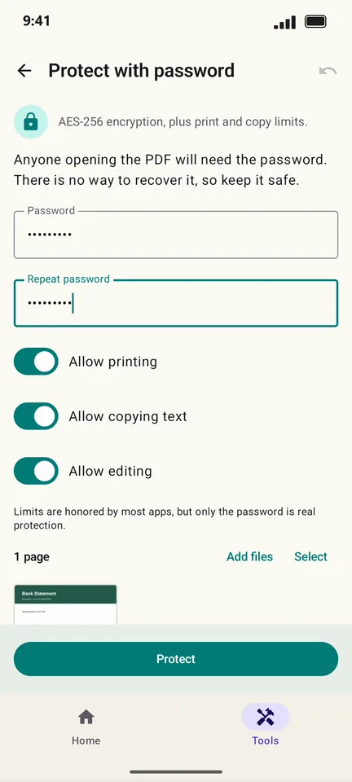

How to put a password on a PDF on Android
Bank statements, ID scans and payslips should not travel unprotected. PageCat locks a PDF with AES-256 encryption so nobody can open it without the password, and can limit printing and copying.
Steps
Open the Tools tab, tap Protect with password and pick the PDF.
Type the password twice. Turn off Allow printing, Allow copying text or Allow editing if you want those limits.

Tap Protect, then save or share the protected copy.

Good to know
- There is no way to recover a forgotten password, so keep it somewhere safe.
- Send the password in a different message or app than the PDF.
- To take a password off a PDF you can open, use Remove password in the Tools tab.
Questions
How strong is the protection?
PageCat uses AES-256, the standard encryption for PDFs. A long password is what keeps it safe.
Do printing and copying limits always work?
Most apps honour them, but some ignore them. Only the password is real protection.